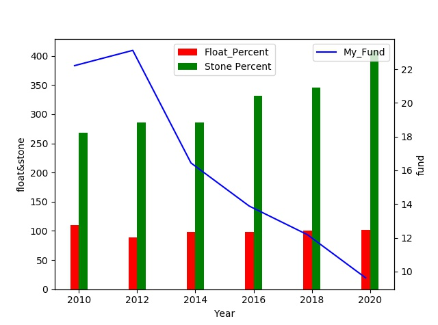
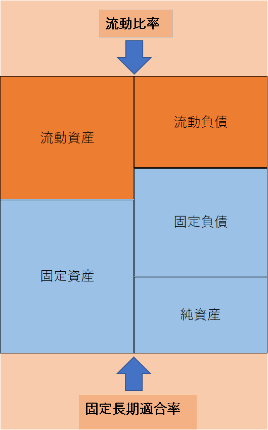

イオン企業分析 其の4
2020/5/18
イオンの企業分析を行っていきます。（4ページ目）
今回からは、また違った分析手法を行っていきます。
目次
- 1 ストック分析とは
- 2 自己資本比率
- 3 流動比率
- 4 固定比率
- 5 固定長期適合率
ストック分析
ストック分析とは、企業の支払い能力を図る安全性分析の一つであり、 そのうち、貸借対照表を用いるもの
貸借対照表とは、簡単に言うと、企業の保有している財産や借金を 細かく記載しているもののこと。下図のような表（実際は、もっと細かい）を使用するが、 今回は、分類されたものの合計値を用いて分析する。
| 年 | 自己資本 | 総資本 | 流動資産 | 流動負債 | 固定資産 | 純資産 |
| 2010 | 840534 | 3785228 | 1533085 | 1388050 | 2252202 | 1144434 |
| 2012 | 935738 | 4048937 | 1372530 | 1539334 | 2676406 | 1282066 |
| 2014 | 1120097 | 6815241 | 3612778 | 3665246 | 3202463 | 1684569 |
| 2016 | 1141795 | 8225874 | 4435940 | 4531966 | 3789934 | 1819474 |
| 2018 | 1151562 | 9452756 | 5474121 | 5447642 | 3978634 | 1916737 |
| 2020 | 1064516 | 11062685 | 6713352 | 6599221 | 4349333 | 1849278 |
使用するデータの関係性は、以下に紹介。
- 自己資本＝株主資本＋その他の包括利益 ＆ 純資産ー（非支配株主持分＋新株予約権）
- 総資本（資産合計）＝流動資産＋固定資産 ＆ 純資産＋負債合計
- 流動資産：1年以内に現金化することができる資産
- 固定資産：長期にわたって保有する資産
- 流動負債：1年以内に支払わなければいけない借金
- 固定負債：1年以後に支払わなければいけない借金
- 純資産＝総資本ー負債合計 ＆ 自己資本＋（非支配株主持分＋新株予約権）
これらの指標を用いて、イオンの決算（2月末）時点での資産と負債の割合について 分析していく。 分析手法については下記にて紹介。
＊非支配株主持分とは、親会社（イオン）ではなく、子会社に帰属する資産であり、 分析では純資産は用いないが、自己資本との区別が難しいためデータ上では記載した。
＊新株予約権については、以下に詳しく解説されているため、必要ならば参照
新株予約権- 自己資本比率＝自己資本÷総資本×100
- 流動比率＝流動資産÷流動負債×100
- 固定比率＝固定資産÷自己資本×100
計算結果はこちら
| 年 | 自己資本比率 | 流動比率 | 固定比率 |
| 2010 | 22.20563728 | 110.4488311 | 267.9489467 |
| 2012 | 23.11070782 | 89.16388516 | 286.0208734 |
| 2014 | 16.43517815 | 98.5684999 | 285.9094346 |
| 2016 | 13.88053111 | 97.88114033 | 331.9277103 |
| 2018 | 12.18228842 | 100.4860635 | 345.4988963 |
| 2020 | 9.622582583 | 101.7294617 | 408.5737556 |
グラフで表すと...
このグラフは、My_Fundが自己資本比率、Float Percentが流動比率、Stone Percentが固定比率をそれぞれ表している。
自己資本比率
この結果から、自己資本比率は、2012年ごろから減少傾向にあることがわかります。 自己資本比率とは，総資本に対する自己資本の割合と考えられるため、 20％付近占めていたのが、10年間で10％ほどまで減少している。
また、自己資本比率以外の割合は他人資本、つまり借金を表しているため、 自己資本：他人資本＝1：9と考えると恐ろしいなと思ってしまいますね。
借金し過ぎなんじゃ...
実際、小売業の自己資本比率の平均は、40％付近であり、業界全体をみても、優劣は40％付近が 基準値となるため、かなり低いことがわかります。 ここで、大幅に負債の割合が多いと倒産しないか、借金を返せるのかが心配になってくるため、 その内訳をみていきます。
資産と負債の内訳を見る際には、固定資産・負債と流動資産・負債の関係性を見ていく必要がある。 上記でも記述したが、固定資産・負債は長期的で、流動資産・負債は短期的という特徴がある。
とりあえず、短期的のほうが重要
流動比率
まず、流動比率についてだが、一年以内に現金化することができる流動資産と 一年以内に支払わなければいけない借金である流動負債との割合のため、 100％を超えていれば一年以内に支払わなければいけない借金を1年以内に 支払うことができるほどの資産を保有していることを意味している。
計算結果を見ると、流動比率は大体100％付近であり、 ギリギリ支払うことのできる流動資産を保有していることがわかるかと。 しかし、決して堅実性の高い企業とは言えないと考えられます。
固定比率
次に、固定比率についてだが、長期にわたって保有する固定資産と 自己資本との割合のため、100％以下だと固定資産を自己資本だけで調達できている ということ。
計算結果を見てみると、10年前でも260％ほどだったのにも関わらず、 年々上昇しており、2020年では、400％を超える結果が出ている。
計算間違ったか疑いましたww
既に解説した自己資本比率などを見てみても、イオンの財政は、自己資本が少なく負債が多いことがわかります。 しかし、将来的な収益が見込める事業では、自己資本だけではなく借金も含めた資金調達、つまり 将来のための投資を行うことがある。イオンでは、国際事業やデジタル事業がそれにあたると考えられる。 （詳しくは、別記事にて紹介）事業別売上高
固定長期適合率
その場合、固定比率ではなく固定長期適合率を採用するほうが適しているため、分析していく。 分析といっても、固定長期適合率は、流動比率と対になっているため、簡単に求めることができる。 式で表すと、
固定長期適合率＝固定資産÷（固定負債＋自己資本）
となるが、下の図のような関係性があるため、既に求めているといってよい。
この図のように、流動比率が分かっていれば、固定長期適合率も求めることができる。 例えば、2020年でいうと、流動比率が101％ほどのため、固定長期適合率は、99％程度と求めることができる。 固定比率が100％を超えていても固定長期適合率が100％を切っていれば、財政面では安全だといえるが、 イオンの場合は、固定比率が100％を大幅に超えており、固定長期適合率はギリギリ100％を切っているため、 財政難というほどではないが、完全に安心できる財政とは言えないかと。
以上から、基本的に負債の割合が多いことがわかったが、次ページでは、その原因は何なのかを 貸借対照表をさらに細かく分析していく。
 2020/5/20
2020/5/20